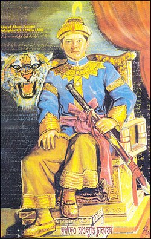

From a Tai prince's journey across the hills to the beginning of a kingdom that endured for nearly six centuries.
In the early 13th century, Mong Mao was a small Tai kingdom in the region of present-day Yunnan and Myanmar. From this land began a journey that would eventually shape the history of Assam.
In 1228, the Tai prince Chao-lung Sukaphaa began his journey with around 9,000 followers, mostly men. Crossing the hills, they entered the Brahmaputra valley and began searching for a place where they could build a new home and establish a kingdom.
But Sukaphaa's journey was not simply a story of conquest. When he encountered the Morans and Borahis, he chose friendship and cooperation rather than attacking them. Over time, many of his followers married into these communities, creating connections between the newcomers and the people who already lived in the valley.
After years of moving from place to place, Sukaphaa finally established his capital at Charaideu in 1253. From there began the difficult task of building a state.
What began as the journey of a Tai prince and his followers grew into a kingdom that endured for approximately 600 years.
The Ahom kingdom gradually consolidated its power and expanded its territory. Under King Suhungmung, the kingdom's first major expansion came through the partial annexation of the Sutiya kingdom in 1524.
The Ahom state continued to expand and came into contact with different peoples and kingdoms of the region. In 1536, the Dimasa Kacharis, known to the Ahoms as Timisa, were displaced from their capital at Dimapur. By the middle of the 16th century, the Ahoms controlled much of present-day eastern Assam.
The late 17th century brought another important phase of expansion. The Battle of Itakhuli in 1682 marked the end of the Ahom-Mughal conflicts, after which much of Koch Hajo came under Ahom control.
Through centuries of state-building, warfare, diplomacy and interaction with different communities, the Ahom kingdom became a major political power in the region. They are widely described as important architects in the formation of what became modern Assam.
Over the centuries, the Ahom kingdom and its society underwent significant changes. Ahom rulers and sections of the population became increasingly influenced by Indian traditions.
King Suhungmung adopted the Hindu name “Swarga Narayan,” and later Ahom kings were known as Swargadeo in Assamese and were coronated through the Singarigharutha ceremony.
At the same time, the Ahom language and identity gradually changed, with Assamese becoming increasingly prominent in place of the traditional Tai-Ahom language.
These changes became part of the long and complex history of the Ahom people.
By the latter half of the 18th century, Ahom power began to decline. The kingdom faced internal upheaval, including the Moamoria rebellion, during which the capital was temporarily taken.
In the early 19th century, Burmese forces invaded the Ahom kingdom, uprooted its capital and installed a puppet Ahom king.
The Burmese were subsequently defeated by the British in the First Anglo-Burmese War. The Treaty of Yandaboo in 1826 paved the way for the end of Ahom political rule.
After this, Assam came under British India, and the Ahom kingdom ceased to exist as an independent ruling power.
The end of Ahom rule did not mean the end of the Ahom people.
Across the centuries, their history, traditions and identity continued to remain part of Assam's story. In more recent times, efforts have also been made to revive the Tai-Ahom language and cultural traditions.
From the journey of Sukaphaa in 1228, to the establishment of Charaideu in 1253, through nearly six centuries of Ahom rule, and beyond the fall of the kingdom—the story of the Ahoms remains a story of journey, state-building, adaptation and heritage.
“The kingdom ended, but the memory of its people continues.”